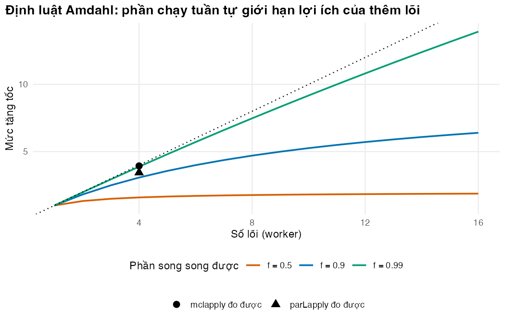

Bài 4: Tính toán song song và Rcpp cho vòng lặp nóng
Chạy nhiều lượt mô phỏng cùng lúc, viết vòng lặp nóng bằng C++, và biết khi nào công sức đó đáng bỏ ra
Vì sao bạn nên quan tâm?
Một nhóm nghiên cứu ở Hà Nội được đề nghị gửi bằng chứng về lịch xét nghiệm tải lượng trước kỳ rà soát danh mục BHYT. Nếu chuyển từ 12 sang 6 tháng/lần, quỹ phải trả thêm khoảng 180 tỷ VNĐ mỗi năm cho 184,214 người bệnh (Báo Lào Cai 2025; Bộ Y tế 2024), nên quyết định này cần một phân tích độ nhạy xác suất (PSA) đầy đủ. Nhưng PSA với 1,000 bộ tham số cho mô hình ở Bài 3 nghĩa là 33.6 tỷ lượt người-tháng. Nếu chỉ có một ngày làm việc, tức 8 giờ theo Bộ luật Lao động (Quốc hội 2019), mỗi lượt người-tháng chỉ được tốn khoảng 857 nano giây. Bài này giúp bạn quyết định nên chạy song song, viết lại vòng lặp nóng bằng C++, hay cả hai, để kịp hạn.
Mục tiêu học tập
Sau bài này, bạn có thể:
Phân biệt hai cách tăng tốc: chạy nhiều việc độc lập cùng lúc (tính toán song song, parallel computing) và làm một việc nhanh hơn (biên dịch sang C++).
Chạy song song bằng parLapply() (cụm PSOCK) và mclapply() (fork), giữ kết quả tái lập bằng seed riêng cho từng tác vụ và từng vai trò, không chồng lấn.
Viết lại vòng lặp nóng của mô phỏng vi mô bằng C++ qua Rcpp và chứng minh kết quả trùng với R.
Ước lượng lợi ích tối đa bằng định luật Amdahl và điểm hòa vốn của thời gian biên dịch.
Quyết định khi nào song song hóa hay Rcpp đáng làm, khi nào không; và để bài chạy tiếp được khi máy chưa có trình biên dịch.
Ý chính
Phân tích độ nhạy xác suất (PSA), các lượt lặp lại và các kịch bản là những việc độc lập: chia cho nhiều lõi là cách tăng tốc đơn giản nhất.
Các chu kỳ trong một lượt chạy thì tuần tự; các cá thể trong một chu kỳ thì độc lập nhưng quá nhỏ để chia cho nhiều lõi. Phần này cần vectơ hóa (Bài 3) hoặc C++.
Gắn seed cố định cho mỗi tác vụ và mỗi vai trò (quần thể, sự kiện) từ những khối seed tách rời. Seed k và k + 1 cho hai vai trò của các tác vụ liên tiếp sẽ chồng lấn.
PSOCK chạy được trên mọi hệ điều hành nhưng phải nạp lại hàm và dữ liệu cho từng worker (tiến trình con). Fork nhanh và tiện nhưng không có trên Windows.
Định luật Amdahl: phần việc tuần tự giới hạn mức tăng tốc, dù thêm bao nhiêu lõi.
Rcpp cho phép viết vòng lặp bằng C++ mà vẫn dùng bộ sinh số ngẫu nhiên của R, nên set.seed() vẫn có tác dụng.
C++ chỉ đáng viết khi số lượt chạy đủ lớn và đã có một phiên bản R làm chuẩn để đối chiếu.
Nội dung
Việc gì chạy song song được
Một PSA với hàng nghìn bộ tham số gồm hàng nghìn lượt chạy không phụ thuộc nhau. Đây là dạng việc lý tưởng để chia cho nhiều lõi CPU. Ngược lại, các tháng trong một lượt chạy phải đi theo thứ tự. Các cá thể trong một tháng thì độc lập, nhưng mỗi phép tính quá nhỏ: chi phí gửi dữ liệu sang lõi khác lớn hơn lợi ích. Quy tắc chung là song song hóa ở cấp cao nhất có thể (bộ tham số, lượt lặp, kịch bản), và tăng tốc phần bên trong bằng vectơ hóa hoặc mã biên dịch.
Hai cơ chế trong gói parallel
Mỗi tiến trình R chạy việc song song gọi là một worker (tiến trình con).
parLapply() (PSOCK)
mclapply() (fork)
Hệ điều hành
Mọi hệ điều hành
macOS, Linux (không có trên Windows)
Worker bắt đầu từ
Một phiên R trống
Bản sao của phiên hiện tại
Cần chuẩn bị
clusterExport(), clusterEvalQ() để nạp hàm và dữ liệu
Không
Chi phí khởi động
Vài trăm mili giây mỗi worker
Rất nhỏ
Phù hợp khi
Mã phải chạy trên Windows, hoặc trên nhiều máy
Máy cá nhân macOS/Linux, phiên tương tác
Số ngẫu nhiên khi chạy song song
Nếu mỗi worker tự rút số ngẫu nhiên từ trạng thái hiện có, kết quả sẽ phụ thuộc vào việc tác vụ nào chạy ở worker nào. Có hai cách giữ tái lập.
Cách thứ nhất, dùng trong bài này: mỗi tác vụ tự gọi set.seed() với seed của riêng nó, nên kết quả của tác vụ \(k\) luôn như nhau dù chạy ở đâu. Cẩn thận ở chỗ chọn seed. Một lượt lặp cần hai seed, một cho quần thể và một cho các sự kiện. Nếu tác vụ \(k\) dùng seed \(k\) cho quần thể và \(k + 1\) cho sự kiện, thì tác vụ \(k + 1\) dùng seed \(k + 1\) cho quần thể, tức đúng seed mà tác vụ \(k\) đã dùng cho sự kiện. Dãy sự kiện của lượt này lại là dãy quần thể của lượt kia, và các lượt “độc lập” không còn độc lập. Cách đúng là cho mỗi vai trò một khối seed riêng (hằng số POP_BLOCK cho quần thể và SIM_BLOCK cho sự kiện trong mã bên dưới), rồi kiểm tra không có seed nào trùng. Các seed khác nhau của bộ sinh Mersenne-Twister cho dòng số trông độc lập trong thực tế, nhưng không có bảo đảm lý thuyết rằng chúng không chồng lấn.
Cách thứ hai chặt hơn: dùng bộ sinh L’Ecuyer-CMRG, được thiết kế để chia thành nhiều dòng số dài, không chồng lấn (L’Ecuyer và c.s. 2002), qua RNGkind("L'Ecuyer-CMRG") và clusterSetRNGStream(). Với phần lớn mô hình kinh tế y tế, khối seed riêng cho từng vai trò là đủ dùng.
Định luật Amdahl
Nếu một phần \(f\) của công việc chạy song song được trên \(k\) worker, còn phần \(1 - f\) phải chạy tuần tự, thì mức tăng tốc tối đa là
Với \(f =\) 0.9, dù có bao nhiêu lõi cũng không nhanh hơn 10 lần. Phần tuần tự ở đây gồm khởi động worker, nạp mã, gửi dữ liệu và gộp kết quả.
Rcpp: vòng lặp nóng bằng C++
Trong C++, vòng lặp không bị phạt như trong R vì mã được biên dịch trước. Rcpp nối R với C++: kiểu NumericVector, IntegerVector, List ánh xạ trực tiếp sang vectơ và danh sách của R, và chú thích // [[Rcpp::export]] biến hàm C++ thành hàm R khi gọi Rcpp::sourceCpp()(Eddelbuettel và François 2011). Tệp code/microsim.cpp viết lại đúng thuật toán của run_microsim() bằng vòng lặp thuần: tháng ở ngoài, người ở trong. Ba chi tiết giúp kết quả khớp với R đến từng chữ số:
R::runif() gọi đúng bộ sinh số ngẫu nhiên của R, theo đúng thứ tự: \(n\) số mỗi tháng, mỗi người một số.
Lũy thừa dùng R_pow(), cùng hàm mà toán tử ^ của R dùng.
Cờ biên dịch -ffp-contract=off ngăn trình biên dịch gộp phép nhân và phép cộng thành một lệnh (FMA), vốn làm tròn khác đi ở chữ số cuối.
Cái giá phải trả: cần trình biên dịch (Xcode Command Line Tools trên macOS, Rtools trên Windows), chỉ số mảng bắt đầu từ 0, lỗi tràn chỉ số có thể làm sập phiên R thay vì báo lỗi, và người đọc mô hình phải đọc được hai ngôn ngữ.
Khi nào đáng làm
Tình huống
Lựa chọn hợp lý
Một lượt chạy vài giây, vài chục lượt
R vectơ hóa là đủ
Hàng trăm đến hàng nghìn lượt độc lập (PSA, kịch bản)
Song song hóa trước: ít công sức, không đổi mã mô hình
Một lượt chạy quá chậm, cần hàng nghìn lượt (PSA lồng hai vòng)
Rcpp cho vòng lặp nóng, kèm phiên bản R để đối chiếu
Mô hình còn thay đổi hằng ngày
Chưa nên viết C++: mỗi thay đổi phải sửa và kiểm tra ở hai nơi
Thực hành
Phần đầu nạp gói parallel, đếm số lõi và chọn số worker. Ta chừa một lõi cho hệ điều hành và giới hạn số worker để bài chạy được trên máy phổ thông. Các hằng số seed được đặt ở đây.
if (!isTRUE(l10n_info()[["UTF-8"]])) invisible(Sys.setlocale("LC_CTYPE", "en_US.UTF-8"))source("../_shared/R/helpers.R")source("../_shared/R/vn_data.R") # course-wide values: prices, threshold, life tablesource("code/model.R")library(ggplot2)library(parallel)p <-load_hiv_params() # params/hiv.csv + the shared Vietnamese inputsn_cores <-detectCores()n_workers <-min(4, max(1, n_cores -1)) # leave one core for the operating systemN_REP <-3000# people per replicationN_TASKS <-8# number of independent replicationsN_CHECK <-10000# people in the R-versus-C++ check and benchmarkN_PSA_PEOPLE <-1000# people per run in the PSA cost estimateN_PSA_RUNS <-2000# runs in a PSA: 1,000 parameter sets x 2 strategiesPOP_BLOCK <-100000# seeds for the populations: 100001, 100002, ...SIM_BLOCK <-200000# seeds for the events: 200001, 200002, ...task_ids <-seq_len(N_TASKS)c(cores = n_cores, workers = n_workers)
cores workers
12 4
Đoạn nhỏ sau cho thấy lỗi chọn seed ở trên bằng số: với cách k và k + 1, bao nhiêu seed bị dùng hai lần, và với hai khối seed tách rời thì bao nhiêu. Điểm kiểm tra stopifnot() bảo đảm hai khối không trùng.
# Why not seed = k for the population and seed = k + 1 for the events? Task k + 1 then uses# seed k + 1 for its population, which is the seed task k used for its events.naive_pop <-1000+ task_idsnaive_sim <- naive_pop +1n_shared_naive <-length(intersect(naive_pop, naive_sim))# Two separate blocks of seeds never meet:pop_seeds <- POP_BLOCK + task_idssim_seeds <- SIM_BLOCK + task_idsstopifnot(!anyDuplicated(c(pop_seeds, sim_seeds)))c(shared_seeds_naive = n_shared_naive, shared_seeds_blocks =length(intersect(pop_seeds, sim_seeds)))
shared_seeds_naive shared_seeds_blocks
7 0
Cách chọn dùng chung seed làm 7 trong 8 tác vụ bị trùng; hai khối tách rời không có seed nào trùng.
Đơn vị công việc là một lượt lặp độc lập: một quần thể mới, hai chiến lược dùng chung số ngẫu nhiên, trả về chênh lệch. Mọi thứ ngẫu nhiên đều được điều khiển bởi hai seed của tác vụ.
# One independent replication k: a new population, both strategies, common random numbers.# Everything random is driven by the seeds of task k, so the result does not depend on where# or when the task runs.one_rep <-function(k) { pop_r <-make_population(p, N_REP, seed = POP_BLOCK + k) res <-run_strategies(p, pop_r, seed = SIM_BLOCK + k) d <-paired_diff(res$sims, wtp = p$wtp)c(task = k, d_cost = d$d_cost, d_qaly = d$d_qaly, d_nmb = d$d_nmb)}
Chạy tuần tự 8 lượt bằng lapply() để có mốc so sánh. Lần chạy đầu thường chậm hơn vì R biên dịch mã khi dùng lần đầu, nên ta chạy khởi động một lần, rồi lấy trung vị của ba lần đo.
# Timing helper: run a function `reps` times, return the median elapsed time and the last value.time_median <-function(f, reps =3) { secs <-numeric(reps)for (i inseq_len(reps)) secs[i] <-system.time(out <-f())[["elapsed"]]list(seconds =median(secs), value = out)}invisible(one_rep(1)) # warm-up: R compiles the functions on first userun_seq <-function() do.call(rbind, lapply(task_ids, one_rep))tm_seq <-time_median(run_seq)t_seq <- tm_seq$secondsrep_seq <- tm_seq$valuet_seq
Bây giờ chạy song song bằng cụm PSOCK. Mỗi worker là một phiên R trống, nên ta phải đặt thư mục làm việc, nạp hàm và gửi các đối tượng cần thiết. Thời gian đo gồm cả việc khởi động và dừng cụm. Điểm kiểm tra identical() xác nhận kết quả song song trùng với kết quả tuần tự.
# PSOCK cluster: works on Windows, macOS and Linux. Each worker is a fresh R session,# so it must load the helpers, the model and the objects it needs. The timing includes# starting and stopping the cluster, because that is part of the cost.run_psock <-function() {# Starting a PSOCK cluster can fail now and then (e.g. a busy network port): try once more cl <-tryCatch(makeCluster(n_workers), error =function(e) makeCluster(n_workers))on.exit(stopCluster(cl))clusterExport(cl, c("p", "N_REP", "POP_BLOCK", "SIM_BLOCK", "one_rep"))invisible(clusterCall(cl, setwd, getwd()))invisible(clusterEvalQ(cl, { source("../_shared/R/helpers.R"); source("code/model.R") }))do.call(rbind, parLapply(cl, task_ids, one_rep))}tm_par <-time_median(run_psock)t_par <- tm_par$secondsstopifnot(identical(rep_seq, tm_par$value)) # same seeds -> same numbers, in any order of executiont_par
[1] 2.519
Trên macOS và Linux, mclapply() tạo worker bằng cách sao chép phiên hiện tại, nên không cần chuẩn bị gì thêm.
Máy chạy bài này có 12 lõi; ta dùng 4 worker. parLapply() nhanh hơn 3.5 lần, còn mclapply() nhanh hơn 3.8 lần. PSOCK chậm hơn fork một chút vì phải khởi động các phiên R mới và nạp lại mã.
Tiếp theo là Rcpp. Bước biên dịch chỉ chạy một lần mỗi phiên R. Nếu máy chưa có trình biên dịch hoạt động, đoạn mã không dừng mà đặt has_cpp bằng FALSE, và các phần C++ bên dưới được bỏ qua.
# Compile the C++ kernel once per session (a few seconds). Without a working compiler the# lesson goes on without the C++ parts instead of stopping.t_compile <-NA_real_has_cpp <-tryCatch({ t_compile <-system.time(compile_microsim_cpp())[["elapsed"]]TRUE}, error =function(e) {message("C++ compilation failed: ", conditionMessage(e))FALSE})c(has_cpp = has_cpp, compile_seconds =round(t_compile, 1))
has_cpp compile_seconds
1.0 1.8
Biên dịch mất 1.8 giây. Toàn bộ mã C++ nằm trong code/microsim.cpp; hãy đặt nó cạnh run_microsim() ở Bài 3 và dò ba bước.
Xem code/microsim.cpp
// M04 microsimulation kernel in C++ (Rcpp). Same algorithm as run_microsim() in// code/model.R, written as plain loops: cycles outside, people inside.// Random numbers: in every cycle, n uniforms (one per person) -- the same order as// runif(n) in R, so the same seed gives the same individuals. One uniform decides// death, change of viral state or acquired resistance (competing risks).// Compile with compile_microsim_cpp().// License: MIT.#include <Rcpp.h>usingnamespace Rcpp;// [[Rcpp::export]]List microsim_cpp(NumericVector age0, NumericVector adh, List p,double int_first,double int_after,int n_cycles, NumericVector disc_start, NumericVector disc_mid, NumericVector disc_end, NumericVector v_cost_tx, NumericVector v_cost_vir, NumericVector v_util, NumericVector v_alive){constint n = age0.size();// Life table (lower bound of each age group, annual death rate), as in bg_mortality() NumericVector lt_age = p["lt_age"], lt_mx = p["lt_mx"];constint n_lt = lt_age.size();constdouble mu_supp = p["mu_supp"], mu_vir = p["mu_vir"], vir_slope = p["vir_slope"];constdouble r_reb1 = p["r_reb1"], r_reb2 = p["r_reb2"], hr_adh10 = p["hr_adh10"];constdouble r_resup1 = p["r_resup1"], r_resup2 = p["r_resup2"], hr_eac = p["hr_eac"];constdouble r_adr = p["r_adr"];constdouble eac_months = p["eac_months"], c_vl = p["c_vl"];constdouble eac_sessions = p["eac_sessions"], c_visit_unit = p["c_visit_unit"];constdouble c_eac = eac_sessions * c_visit_unit;// same product as sim_setup() in R// Attributes that change over time (the model's memory) and accumulators IntegerVector state(n,1); NumericVector res(n), cum_vir(n), eac(n), next_test(n, int_first); LogicalVector ever_flag(n), switched(n), unnecessary(n); NumericVector cost(n), qaly(n), ly(n), ly_undisc(n), n_vl(n), n_eac(n), n_rep1(n); IntegerMatrix trace(n_cycles +1,5); IntegerVector f1_res(n_cycles +1); NumericVector u(n); trace(0,0)= n;for(int t =1; t <= n_cycles; t++){for(int i =0; i < n; i++) u[i]= R::runif(0.0,1.0);constdouble ds = disc_start[t -1], dm = disc_mid[t -1], de = disc_end[t -1];for(int i =0; i < n; i++){int s = state[i];if(s ==5){ trace(t,4)+=1;continue;}// 1. One event at most: death, change of viral state, or acquired resistanceconstdouble age = age0[i]+(t -1)/12.0;int g = n_lt -1;// age group: largest lower bound <= agewhile(g >0&& age < lt_age[g]) g--;constbool viremic =(s ==2|| s ==4);constdouble mu_hiv =(viremic ? mu_vir : mu_supp)*(1+ vir_slope * cum_vir[i]/12);constdouble death =(lt_mx[g]+ mu_hiv)/12;constdouble boost = eac[i]>0? hr_eac :1.0;double move;if(s ==1) move = r_reb1 * R_pow(hr_adh10,10*(1- adh[i]));elseif(s ==2) move =(1- res[i])* r_resup1 * adh[i]* boost;elseif(s ==3) move = r_reb2 * R_pow(hr_adh10,10*(1- adh[i]));else move = r_resup2 * adh[i]* boost; move = move /12;constdouble adr =((s ==2&& res[i]==0)? r_adr :0.0)/12;constdouble total = death + move + adr;constdouble p_exit =1- exp(-total);constdouble p_die = death / total * p_exit;constdouble p_move = move / total * p_exit;constdouble p_adr = adr / total * p_exit;int ns = s;if(u[i]< p_die) ns =5;elseif(u[i]< p_die + p_move) ns =(s ==1)?2:(s ==2)?1:(s ==3)?4:3;elseif(u[i]< p_die + p_move + p_adr) res[i]=1;// stays in F1, now resistant// 2. Rewards; state values are indexed 0..4 in C++ cost[i]= cost[i]+ v_cost_tx[s -1]* ds +(v_cost_vir[s -1]+ v_cost_vir[ns -1])/2* dm; qaly[i]= qaly[i]+(v_util[s -1]+ v_util[ns -1])/2/12* dm;constdoublely_t=(v_alive[s -1]+ v_alive[ns -1])/2/12; ly[i]= ly[i]+ly_t* dm; ly_undisc[i]= ly_undisc[i]+ly_t; cum_vir[i]= cum_vir[i]+(viremic ?1:0); s = ns;// 3. Monitoring at the end of the cycleif(s !=5){bool tested =false, detected =false;if(eac[i]>0){ eac[i]= eac[i]-1;if(eac[i]==0){ tested =true;if(s ==1|| s ==2) n_rep1[i]= n_rep1[i]+1;if(s ==2){ s =4; switched[i]=true;if(res[i]==0) unnecessary[i]=true;} next_test[i]= t + int_after;}}elseif(t >= next_test[i]){ tested =true;if(s ==2|| s ==4){ detected =true; eac[i]= eac_months; ever_flag[i]=true;}else{ next_test[i]= t +(ever_flag[i]? int_after : int_first);}} n_vl[i]= n_vl[i]+(tested ?1:0); n_eac[i]= n_eac[i]+(detected ?1:0); cost[i]= cost[i]+((tested ?1.0:0.0)* c_vl +(detected ?1.0:0.0)* c_eac)* de;} state[i]= s; trace(t, s -1)+=1;if(s ==2&& res[i]==1) f1_res[t]+=1;}}return List::create(_["cost"]= cost, _["qaly"]= qaly, _["ly"]= ly, _["ly_undisc"]= ly_undisc, _["months_vir"]= cum_vir, _["res"]= res, _["switched"]= switched, _["unnecessary"]= unnecessary, _["n_vl"]= n_vl, _["n_eac"]= n_eac, _["n_rep1"]= n_rep1, _["trace"]= trace, _["f1_res"]= f1_res);}
Khi có trình biên dịch, kiểm tra quan trọng nhất là: cùng 10,000 người, cùng seed, R và C++ phải cho kết quả giống hệt nhau.
pop_10k <-make_population(p, N_CHECK, seed =51)sim_r <-run_microsim(p, pop_10k, "vl12", seed =52)if (has_cpp) { sim_c <-run_microsim_cpp(p, pop_10k, "vl12", seed =52)stopifnot(identical(sim_r$indiv, sim_c$indiv), identical(sim_r$trace, sim_c$trace),identical(sim_r$f1_res, sim_c$f1_res))"R và C++ cho cùng lịch sử sống của từng người"}
[1] "R và C++ cho cùng lịch sử sống của từng người"
Rồi mới đo tốc độ. check = TRUE một lần nữa xác nhận hai biểu thức trả về cùng kết quả.
speedup_cpp <-NA_real_; runs_breakeven <-NA_real_cpp_tab <-data.frame(engine =c("R_vectorised", "Rcpp"), median_s =NA_real_, mem_alloc_mb =NA_real_)if (has_cpp) { bm_cpp <- bench::mark(R_vectorised =run_microsim(p, pop_10k, "vl12", seed =52)$indiv,Rcpp =run_microsim_cpp(p, pop_10k, "vl12", seed =52)$indiv,iterations =3, check =TRUE, filter_gc =FALSE ) cpp_tab <-data.frame(engine =as.character(bm_cpp$expression),median_s =round(as.numeric(bm_cpp$median), 3),mem_alloc_mb =round(as.numeric(bm_cpp$mem_alloc) /1e6, 1)) speedup_cpp <-as.numeric(bm_cpp$median[1]) /as.numeric(bm_cpp$median[2])# Break-even: how many model runs before the compile time is paid back? runs_breakeven <- t_compile / (as.numeric(bm_cpp$median[1]) -as.numeric(bm_cpp$median[2]))}cpp_tab
Bộ máy C++ nhanh hơn 10.9 lần. Cột bộ nhớ ở đây là tổng lượng cấp phát trong R (1.3 so với 7,140 MB), phần lớn là rác tạm của bản R, không phải RAM đỉnh (xem Bài 3). Thời gian biên dịch được bù lại chỉ sau khoảng 1 lượt chạy 10,000 người. Trong thực tế, chi phí thật của Rcpp là thời gian viết, kiểm tra và bảo trì mã, không phải thời gian biên dịch.
Cuối cùng, định luật Amdahl đặt các mức tăng tốc đo được vào khung lý thuyết.
# Amdahl's law: if a fraction f of the work can run in parallel on k workers,# the best possible speed-up is 1 / ((1 - f) + f / k).amdahl <-function(k, f) 1/ ((1- f) + f / k)amd_df <-expand.grid(workers =1:16, f =c(0.5, 0.9, 0.99))amd_df$speedup <-amdahl(amd_df$workers, amd_df$f)amd_df$label <-paste0("f = ", amd_df$f)measured <-data.frame(workers = n_workers, speedup = t_seq /c(t_par, t_fork),method =c("parLapply đo được", "mclapply đo được"))measured <- measured[!is.na(measured$speedup), ]# Parallel fraction implied by the measured PSOCK speed-up (Amdahl solved for f). It also# absorbs load imbalance between workers and the cost of starting them, so it is a summary# of one measurement, not a property of the code.f_implied <-if (n_workers >1) min(1, (1- t_par / t_seq) / (1-1/ n_workers)) elseNA_real_f_implied
[1] 0.9526185
fig_amdahl <-ggplot(amd_df, aes(workers, speedup)) +geom_line(aes(colour = label), linewidth =0.8) +geom_point(data = measured, aes(shape = method), size =3) +geom_abline(slope =1, intercept =0, linetype ="dotted") +scale_colour_manual(values = pal_course[c(2, 1, 3)], name ="Phần song song được") +labs(x ="Số lõi (worker)", y ="Mức tăng tốc", shape =NULL,title ="Định luật Amdahl: phần chạy tuần tự giới hạn lợi ích của thêm lõi") +theme_course() +theme(legend.box ="vertical") +guides(colour =guide_legend(nrow =1), shape =guide_legend(nrow =1))save_fig(fig_amdahl, "l04-amdahl.png", width =7, height =4.5)

Mức tăng tốc tối đa theo định luật Amdahl và mức đo được trên máy chạy bài.
Mức tăng tốc của parLapply() tương ứng với phần song song \(f \approx\) 0.95. Con số này tóm tắt một lần đo, nó gộp cả chi phí khởi động worker, gửi dữ liệu, gộp kết quả và độ lệch tải giữa các worker, nên không tách riêng được từng phần. Với các tác vụ ngắn hơn, chi phí khởi động và gửi dữ liệu chiếm tỷ trọng lớn hơn và điểm đo sẽ tụt xuống.
Mẹo thực hành
Viết hàm cho một tác vụ trước (như one_rep()), chạy tuần tự với vài seed, rồi mới đổi lapply() thành parLapply() hoặc mclapply().
Luôn so kết quả song song với kết quả tuần tự bằng identical() trên vài tác vụ, và kiểm tra các khối seed không trùng.
Gọi stopCluster() ngay khi xong việc (hoặc dùng on.exit() như trong mã). Worker bị bỏ quên vẫn giữ bộ nhớ.
Khi viết C++, giữ phiên bản R vectơ hóa làm chuẩn và chạy identical() sau mỗi thay đổi trong microsim.cpp.
Bọc bước biên dịch trong tryCatch() để mã của bạn chạy tiếp được trên máy không có trình biên dịch.
Lỗi thường gặp
Gọi set.seed() một lần trước parLapply() rồi mong kết quả tái lập. Worker PSOCK có trạng thái số ngẫu nhiên riêng; seed của phiên chính không truyền sang. Đặt seed bên trong tác vụ hoặc dùng clusterSetRNGStream().
Dùng seed và seed + 1 cho hai vai trò với các tác vụ có seed liên tiếp. Seed sự kiện của tác vụ này thành seed quần thể của tác vụ kia.
Dùng nhiều worker hơn số lõi vật lý, hoặc mỗi worker lại dùng nhiều luồng (ví dụ BLAS đa luồng). Các tiến trình tranh nhau CPU và tổng thời gian tăng.
Gửi đối tượng lớn sang mọi worker trong khi mỗi tác vụ chỉ cần một phần nhỏ. Gửi tham số và seed rồi để worker tự tạo dữ liệu.
Nhầm chỉ số 0 và 1 khi chuyển mã R sang C++. Trong microsim.cpp, trạng thái vẫn mang mã 1–5 như trong R, nhưng giá trị trạng thái được lấy bằng v_cost_tx[s - 1].
Bài tập
(Dễ) Tính hiệu suất song song (mức tăng tốc chia cho số worker) của hai cách chạy. Giá trị bằng 1 có nghĩa là gì?
(Vừa) Theo định luật Amdahl, mức tăng tốc tối đa với vô hạn lõi là bao nhiêu khi \(f\) = 0.5, 0.9 và 0.99?
(Khó) Một PSA cần 2,000 lượt chạy (1,000 bộ tham số × 2 chiến lược), mỗi lượt 1,000 người. Ước lượng tổng thời gian với bộ máy R vectơ hóa và với Rcpp (tính cả thời gian biên dịch). Lựa chọn nào hợp lý cho Bài 5?
Lời giải
Bài 1. Hiệu suất bằng 1 là lý tưởng: thêm gấp đôi worker thì nhanh gấp đôi. Giá trị trên 1 chỉ nên đọc là nhiễu đo hoặc hiệu ứng phụ, không phải mã chạy “hơn lý tưởng”.
# Exercise 2: the best possible speed-up with unlimited workers is 1 / (1 - f)round(c(f50 =1/ (1-0.5), f90 =1/ (1-0.9), f99 =1/ (1-0.99)), 1)
f50 f90 f99
2 10 100
Bài 3. Đo thời gian một lượt cho mỗi bộ máy rồi nhân lên:
# Exercise 3: total time for N_PSA_RUNS runs of N_PSA_PEOPLE people (a PSA with two strategies).# One run each, after a warm-up call, is enough for a back-of-the-envelope estimate.pop_1k <-make_population(p, N_PSA_PEOPLE, seed =53)invisible(run_microsim(p, pop_1k, "vl12", seed =54))t_r1k <-system.time(run_microsim(p, pop_1k, "vl12", seed =54))[["elapsed"]]t_c1k <-NA_real_if (has_cpp) {invisible(run_microsim_cpp(p, pop_1k, "vl12", seed =54)) t_c1k <-system.time(run_microsim_cpp(p, pop_1k, "vl12", seed =54))[["elapsed"]]}round(c(minutes_R = N_PSA_RUNS * t_r1k /60, minutes_Rcpp = (t_compile + N_PSA_RUNS * t_c1k) /60), 2)
minutes_R minutes_Rcpp
7.23 0.56
Bộ máy R cần khoảng 7.2 phút, Rcpp khoảng 0.6 phút. Bài 5 dùng Rcpp khi có trình biên dịch và tự lùi về bộ máy R (với ít bộ tham số hơn) khi không có. Hai bộ máy cho cùng kết quả với cùng seed, nên lựa chọn chỉ ảnh hưởng thời gian chạy.
Eddelbuettel, Dirk, và Romain François. 2011. “Rcpp: seamless R and C++ integration”. Journal of Statistical Software 40 (8). https://doi.org/10.18637/jss.v040.i08.
L’Ecuyer, Pierre, Richard Simard, E. Jack Chen, và W. David Kelton. 2002. “An object-oriented random-number package with many long streams and substreams”. Operations Research 50 (6): 1073–75. https://doi.org/10.1287/opre.50.6.1073.358.